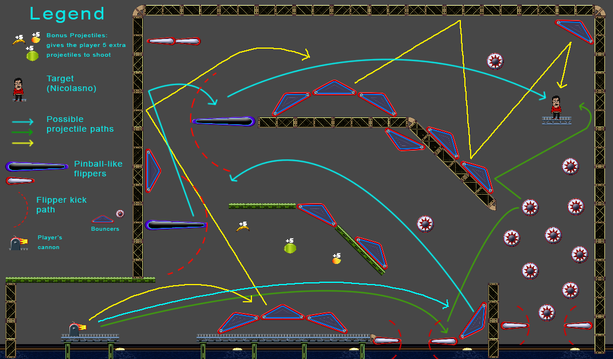

Among all the game projects that I have worked on, this is my first solo game project where I combined my designing, artistic and programming skills to make this unique and humorous game.
This is an arcade-like game that combines some of the game mechanics/dynamics found in games such as pinball arcade games as well as the Angry Birds franchise, and the objective is to knock out Nicolasno
- the antagonist of the game - by launching funny projectiles such as mangoes or plantains from a circus-like cannon, and have these bounce around the levels until they hit and knock down Nicolasno off
the stage. Once you knock Nicolasno out of the stage, make HIM bounce around the level by kicking him with the flippers before he goes into the water to squeeze in extra points!
In this game, you are given a limited number of projectiles to launch from a stationary cannon and hit a target. The player can control the cannon’s firing angle and force and choose which type of projectile to load the cannon with. Each of these projectiles have a different shape and behavior, which make them useful under different circumstances. For example, plantains are larger and bouncier than mangoes, which sometimes makes it easier to hit the target, whereas mangoes are smaller and have a more uniform shape, which gives them a more predictable behavior and make them easier to get in tight spot.
The number of projectiles remaining to the player carries over the levels, so players are encouraged to use them sparingly. Each level provides a few bonus projectiles that can be collected by touching it with the projectile being launch or by the target once it is knocked off and bouncing around the level.
At the end of each level, the player can also purchase more projectiles with the points earned during the game. This way, the player has the option to play either low risk low reward by purchasing as many projectiles as possible and increasing the chance of making it to the last level or high risk high reward by purchasing very few or no projectiles while keeping the highest score and replenishing projectiles with the projectile pickups available in each level.
The image below shows an overview of one of the latest levels of the game with three out of all the possible trajectories that a projectile could take to reach the target.
One of the great things about the design of the game’s levels is the fact that there are oftentimes many ways to complete these levels to give the player the ability to recover and improvise in case things don’t go as expected. For example, in the level illustrated, if the player tries to launch a projectile to take the cyan path and perhaps add too much firing angle and not enough firing power, then the projectile might take either the yellow path, or bounce around and hopefully collect the projectile pickup bonuses and land in the water, thus losing one projectile but gaining at least 5 projectiles. As the level diagram suggests, there are at least three general paths that the projectile could take to reach the target, and each of these paths can vary depending on which projectile is chosen to launch, which adds an element of unpredictability and surprise to the game, thus increasing the game’s replay value.
Additionally, the player can also affect the direction that the projectile is taking by controlling the flippers for those levels that have them; if the projectile is near one of these, the player can trigger them to kick the projectile and attempt to redirect it like in a traditional pinball arcade machine.
The name “El Platanazo” means a smack or whack with a plantain in Spanish. It comes from the word “plátano” which means plantain, and when adding the “azo” suffix to the word in the given context along with the article “El”, it then gives the literal meaning “The smack of the plantain.”